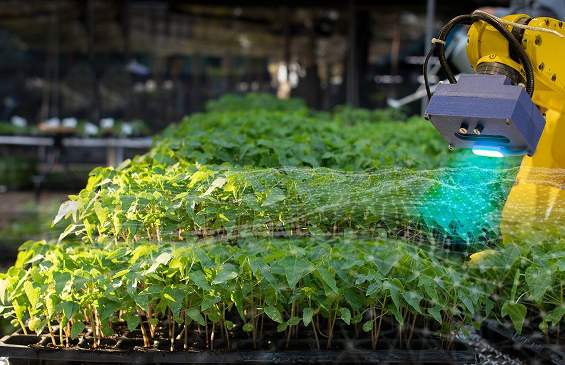

Driving Agricultural Growth through Engineering Excellence · 21–23 October 2026 · Upington, Northern Cape
The South African Institute of Agricultural Engineers (SAIAE) is delighted to invite interested parties to its highly anticipated 2026 Biennial Symposium. Following the remarkably successful SAIAE and PASAE International Symposium held in Grabouw, Western Cape, in 2024, the 2026 edition returns as a standalone SAIAE event — a pivotal national gathering for the agricultural engineering community.
The aim of the biennial event is to bring the agricultural engineering community together to share knowledge and practices across the many fields that define agricultural and biosystems engineering.
"Driving Agricultural Growth through Engineering Excellence"
This theme underpins all discussions, presentations, and activities — focusing on innovation and practical solutions for the sector.
The SAIAE National Council invites engineers, technicians, and other interested parties to contribute. Topics include, but are not limited to:

The Symposium takes place over 3 days with 2 nights' accommodation, from 21 to 23 October 2026:
Delegates are warmly invited to bring along their spouses or partners to enjoy the experience with the agricultural engineering community.
A virtual (online) option allows delegates to join from anywhere in the world to enjoy presentations and participate in discussions. Online participation covers the main Symposium venue throughout Day 1 and Day 2.
Exciting tours true to the nature and character of the Northern Cape — to be confirmed in coming announcements: